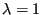

Next: Characteristic Up: Fluid Section Types: Gases Previous: Preswirl Nozzle Contents
A labyrinth is used to prevent the gas from leaking through the space between a rotating and a static device and thus reducing the efficiency. The leaking air is trapped in the successive stages of a labyrinth. It can be straight (Figure 86) or stepped (Figure 87). A stepped labyrinth is used if the gas is compressed or expanded, leading to a decreasing and increasing diameter of the rotating device, respectively. In a stepped labyrinth the static device (hatched in Figures 86 and 87) is usually covered by a honeycomb structure.
A LABYRINTH can be single (only one spike) or multiple (more than one spike). Only in the latter case the distinction between a straight and stepped labyrinth makes sense. Therefore, there are three kinds of labyrinths: single, straight or stepped.
The geometry of a labyrinth can be fixed or flexible during a calculation. For a fixed geometry the gap distance s is constant. For a flexible geometry this gap is defined as the radial distance between two nodes (this feature only works if the structure is defined as in the presence of axisymmetric elements, i.e. the global x-axis is the radial direction, the global y-axis is the axial direction). These nodes have to be genuine structural nodes and should not belong to the fluid network. In a thermomechanical calculation this distance can vary during the computation. Whether the geometry is fixed or flexible is defined by the TYPE parameter.
The formula governing the flow through a labyrinth has been derived in [20] and for the discharge coefficients use was made of [48], [44], [14] and [102]. It runs like
where  for and
| (57) |
for is called the carry-over factor. The meaning of the
paramters and  is explained underneath. Equation
(56) has a similar form as the orifice equation, i.e. for small
downstream pressures the flow becomes supersonic and choking occurs. To
determine the pressure ration
at which choking occurs the following
implicit equation has to be solved:
is explained underneath. Equation
(56) has a similar form as the orifice equation, i.e. for small
downstream pressures the flow becomes supersonic and choking occurs. To
determine the pressure ration
at which choking occurs the following
implicit equation has to be solved:
| (58) |
The
equations used in the code are slightly more complicated, making use of the
other parameters ( ,
,  , ...) as well.
, ...) as well.
A fixed labyrinth is described by the following parameters (to be specified in that order on the line beneath the *FLUID SECTION, TYPE=LABYRINTH SINGLE, TYPE=LABYRINTH STRAIGHT or TYPE=LABYRINTH STEPPED card):
A flexible labyrinth is described by the following parameters (to be specified in that order on the line beneath the *FLUID SECTION, TYPE=LABYRINTH FLEXIBLE SINGLE, TYPE=LABYRINTH FLEXIBLE STRAIGHT or TYPE=LABYRINTH FLEXIBLE STEPPED card):
Please look at the figures for the meaning of these parameters. Depending on the kind of labyrinth, not all parameters may be necessary.
Example files: labyrinthstepped, labyrinthstraight.